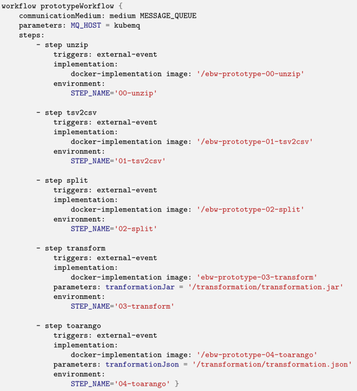

A framework to allow high-level design/specification of scalability aspects of Big Data processing pipelines and their effective and efficient deployment and execution on the continuum computing infrastructure (heterogenous Cloud/Fog/Edge infrastructure).
The purpose of such a framework is to lower the technological barriers of entry to the incorporation of Big Data pipelines in organizations' business processes regardless of the hardware infrastructure. The framework requires new languages, methods, infrastructures, and software for managing Big Data pipelines such that Big Data pipelines can be easily set up in a manner which is trace-able, manageable, analyzable and optimizable and separates the design- from the run-time aspects of their deployment, thus empowering domain experts to take an active part in their definition.
The purpose of such a framework is to allow specification of data processing pipelines by non-IT experts at an abstraction level suitable for pure data processing, in which pipeline specifications are realized (deployed and executed) using instances of a pre-defined set of scalable and composable software container templates (corresponding to step types in pipelines).
The figure below depicts a typical workflow in the use of the framework. Users typically specify high-level descriptions of workflow steps and their dependencies using the Workflow Modeling Manager. This component handles storage configurations, data preparation, and step-level data processing and transformation operations. The output of the component is a deployable data workflow that feeds into the Deployment Service Runtime – a component representing the collection of hybrid computing resources where workflows steps are deployed. Data Storage/Sharing Ecosystem is responsible for storing intermediate and output data and the data exchange mechanism during workflow execution.

An example of workflow specification depicted below and use a DSL specifically designed to handle Big Data pipelines.

The purpose of this framework is to be able to effectively and efficiently model, deply, and execute Big Data pipelines on heterogenous infrastructures (Cloud-Fog-Edge). For COGNITWIN, this framework is relevant for the pilots that require processing of large amounts of data.
The Big Data Workflow framework was part of the initial COGNITWIN Toolbox baseline and has evolved into a software protype to date. Even if it has not been directly applied in the COGNITWIN pilots during the first phase, it can be a relevant framework in the subsequent phases for scalable deployment and execution of data pipelines. It is thus retained for consideration for the next phase of the project.